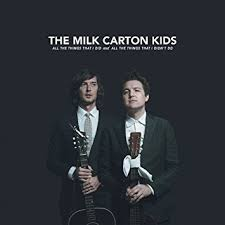
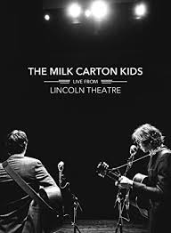
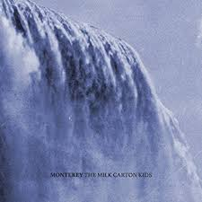
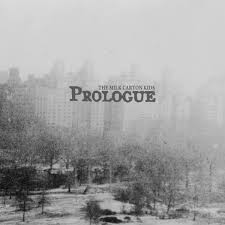
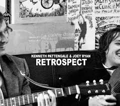
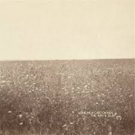
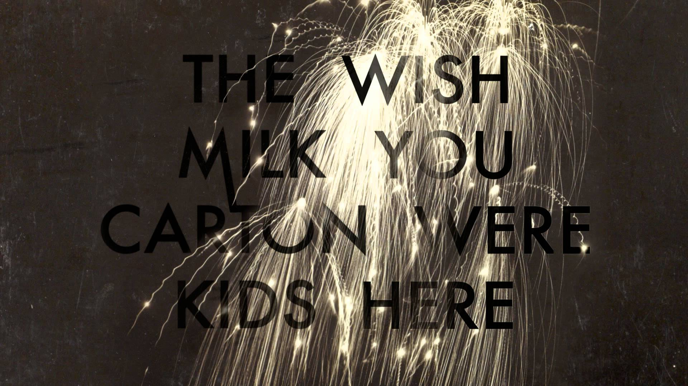

Kenneth Pattengale and Joey Ryan
Left: Joey Ryan, Right: Kenneth Pattengale
The Milk Carton Kids, Live From Lincoln Theatre in Columbus, OH
Album Covers
      Source: Allmusic.com
The Milk Carton Kids are a neo-traditional folk duo from Los Angeles, California. Kenneth Pattengale and Joey Ryan formed the group in early 2011, shelving their solo careers in favor of a collaborative project that focused on harmonized vocals, entwined acoustic guitars, and rootsy songwriting. They released their first two albums -- the live Retrospect and studio LP Prologue -- in 2011, at which time they also began a pattern of persistent touring. Known on the road for their adversarial, Smothers Brothers-evoking comedic banter as well as their virtuosic guitar skills (Pattengale's intricate picking and Ryan's airtight rhythm guitar), they added a backing band to the project for the first time in 2018 with their fourth studio album, All the Things That I Did and All the Things That I Didn't Do.
In the beginning, despite earning comparisons to Simon & Garfunkel, the Civil Wars, and the Everly Brothers, the Milk Carton Kids' minimalist, down-home material had more in common with Gillian Welch and David Rawlings' duets. As a result, Pattengale and Ryan smartly marketed themselves to the Americana crowd. After pulling double duty as Joe Purdy's opening act and backing band during a spring 2011 tour, and closing out 2011 with a performance on NPR's roots rock concert program Mountain Stage, the two spent most of 2012 on the road with other folksy acts, including Old Crow Medicine Show and the Lumineers. The Ash & Clay, the duo's sophomore studio outing, arrived in 2013 via the ANTI- record label. The album was supported by an appearance on the legendary American live music television series Austin City Limits. The band was also featured in the 2013 documentary Another Day, Another Time: Celebrating the Music of Inside Llewyn Davis, inspired by the Coen brothers film. In 2014, a concert DVD titled Live from Lincoln Theatre (recorded in September 2013) was issued by ANTI-/Epitaph, The Ash & Clay was nominated for a Best Folk Album Grammy, and they won Group of the Year at the Americana Music Awards.
After continued extensive touring and writing on the road, the duo decided to record songs for their third LP in live performance at pre-show empty venues across North America. In the end, about half of the record was recorded at Downtown Presbyterian Church in Nashville, with all the tracks capturing various venues' natural reverb. The resulting Monterey was released in May of 2015, and garnered the duo a Grammy nomination for Best American Roots Performance for the song "The City of Our Lady."
The twosome finally slowed down their touring pace following Monterey. Pattengale began taking more work as a producer in Nashville, and, in addition to welcoming his second child, Ryan found work as a producer on Chris Thile's radio show Live from Here (formerly A Prairie Home Companion). In 2018, the Milk Carton Kids returned with the Joe Henry-produced All the Things That I Did and All the Things That I Didn't Do, a more sonically expansive album that found the duo recording with a backing band for the first time. Some of its guests included bassist Dennis Crouch, drummer Jay Bellerose, and Wilco's Pat Sansone on piano and Hammond organ.